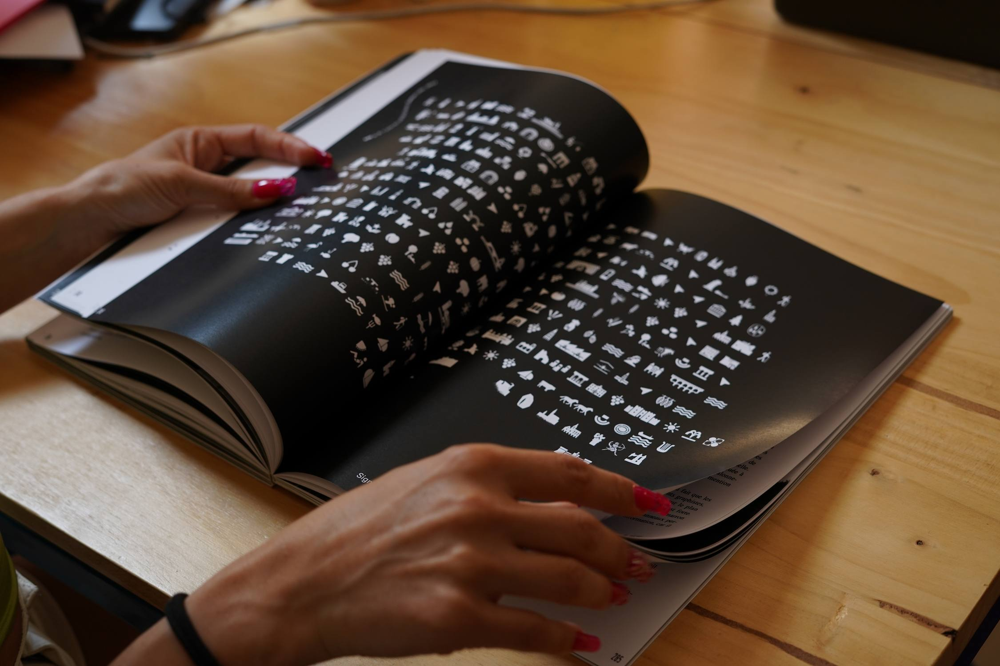
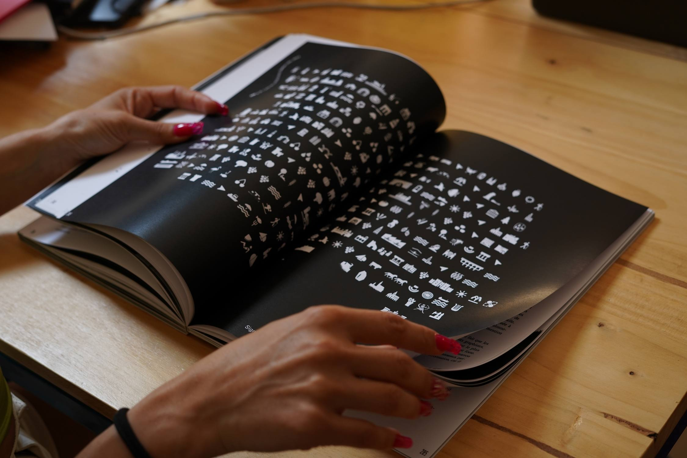
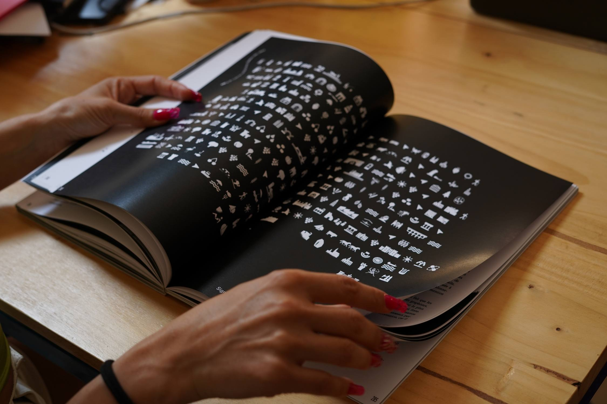

— Création d’un dépliant destiné à la découverte de l’architecture des stations du littoral du Languedoc à vélo. Le recto présente une carte du littoral du Languedoc-Roussillon avec une sélection des points d’intérêts architecturaux. Et le verso un historique de celles-ci. Création d’une famille de pictogrammes représentant les formes architecturales de chaque stations.
